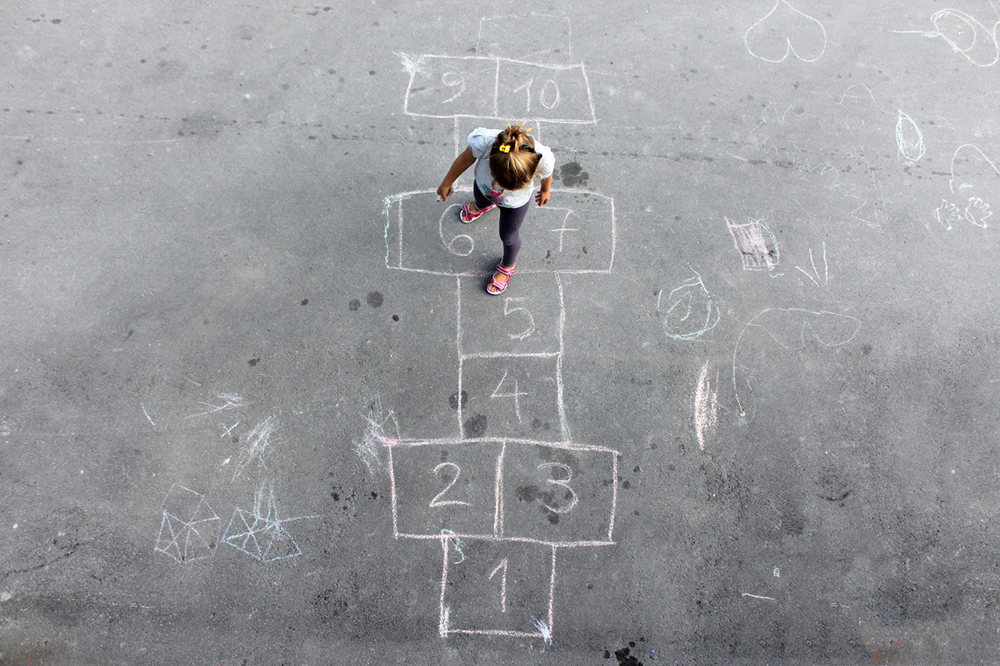

الخلفية
لقد انشغلنا باللعب بأشكاله المختلفة منذ قديم الزمان. فقد جلب اللعب الفرح للناس وجمعهم معًا، وفي الوقت نفسه ساهم في تطوير القدرة الحركية والتعاون بينهم. عندما يتطور اللعب بطريقة أو بأخرى، مثل إضافة القواعد والأهداف الواضحة، يمكن القول إن اللعب يتحول إلى لعبة. عندها يصبح للّعب هدف أوضح، وغالبًا ما يمكن تحديد فائز. وعندما تنتشر اللعبة وتُمارس من قبل عدد أكبر من الناس ضمن أطر منظمة، تتكوَّن رياضة. حينها يمكن، على سبيل المثال، تنظيم مسابقات رسمية وإنشاء دوريات.
ومع ذلك، لا يمكن وضع حدود واضحة بين اللعب، الألعاب، والرياضات، لأن هذه الأنشطة غالبًا ما تتداخل مع بعضها البعض. ما يجمع بين الثلاثة هو أنها تطوّر القدرة الحركية وتساهم في الصحة الجسدية والنفسية، وفي كثير من الأحيان تُنمي أيضًا التفاعل الاجتماعي بين الناس.